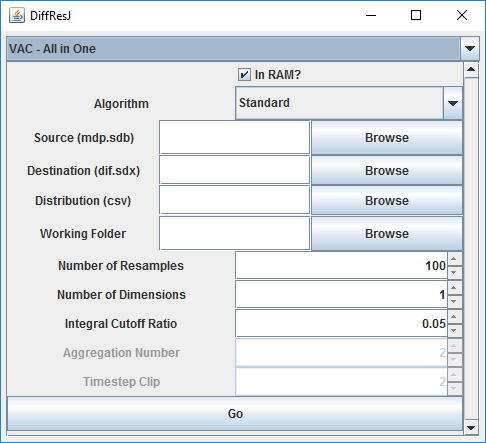
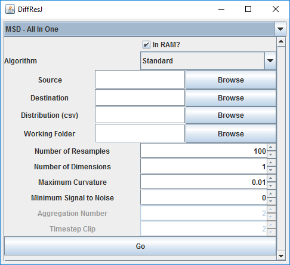

When all options have been specified, just press the "Convert" button, and wait for the conversion to finish.
The
process for performing analysis on velocity autocorrelation is fairly
simmilar. The source trajectory (in the mdp.sdb format), the file to
write to (destination), and a folder to put intermediate results into
need to be specified. In addition, the number of resamples to use and
the dimensionality of the data (1d, 3d) need to be specified. Also, if
using the clip repeat algorithm, the number of timesteps to clip by
needs to be specified, and if using the multi tau algorithm, the number
of blocks to aggregate at each level needs to be specified. You also
have the option to use the in-ram algorithms (faster), or the disk
algorithms (slower, but can handle huge trajectories).

When all options have been specified, just press the "Go" button, and wait for the calculations to finish.
The
process for mean squared displacement is also similar. In addition to
what needs to be specified for velocity, the user needs to specify the
curvature at which data should start being considered (this algorithm
skips the initial data with a high curvature; set this to a very large
value to use all data), as well as the signal to noise ratio at which
data should stop being used (this algorithm stops once the displacement
becomes dominated by noise; set this to zero to use all data).
